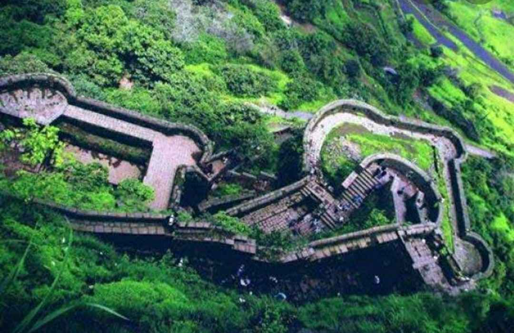

The eighth largest metropolises in India, Pune is located in the state of Maharashtra. It is the second largest city in the state after Mumbai, and is an important city in terms of its economical and industrial growth. Once the hometown of Marathas and a centre of power for the Maratha Empire, the presence of the numerous edifices in Pune links to its rich and glorious past. The city leads as the ‘veritable heartland’ of cultural Maharashtra. Pune also has made its mark as the educational epicenter winning itself the sobriquet, ‘The Oxford of the East’. Not just that, it has a growing industrial hinterland, with information technology, engineering and automotive companies sprouting. The city is known for cultural activities like classical music, spirituality, theatre, sports, and literature. Pune is a pleasant travel getaway destination to spend a quiet holiday.
TOP ATTRACTIONS

Sinhagad
The pride of the Maratha Empire, the Pratapgarh Fort is a historical monument that welcomes all the people interested in knowing everything about the history of the fort. Perched in Satara district and at an altitude of 3500 feet above ground level, the Pratapgarh Fort was built by Maratha King – Chhatrapati Shivaji Maharaj in 1656 to guard the Par Pass.

Agakhan Palace
The Kas Plateau Reserved Forest, also known as the Kaas Pathar, is a plateau situated 25 kilometres west from Satara city in Maharashtra, India. It falls under the Sahyadri Sub Cluster of the Western Ghats, and it became a part of a UNESCO World Natural Heritage Site in 2012. It is a biodiversity hotspot known for various types of seasonal wild flowers bloom and numerous species of endemic butterflies annually in the months of August and September. The plateau is situated at an altitude of 1200 metres and is approximately 10 square kilometers in area. Kaas has more than 850 different species of flowering plants.